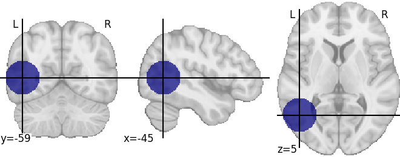

Note
Click here to download the full example code
Assessing the network impact of a lesion¶
Setup¶
# ConWhAt stuff
from conwhat import VolConnAtlas,StreamConnAtlas,VolTractAtlas,StreamTractAtlas
from conwhat.viz.volume import plot_vol_scatter
# Neuroimaging stuff
import nibabel as nib
from nilearn.plotting import (plot_stat_map,plot_surf_roi,plot_roi,
plot_connectome,find_xyz_cut_coords)
from nilearn.image import resample_to_img
from nilearn.datasets import load_mni152_template
# Viz stuff
from matplotlib import pyplot as plt
import seaborn as sns
# Generic stuff
import os, glob, numpy as np, pandas as pd, networkx as nx
from datetime import datetime
# (for docs only: suppress warnings)
import warnings
warnings.filterwarnings('ignore')
Grab lesion¶
# We now use the synthetic lesion constructed in the previous example in a ConWhAt lesion analysis.
lesion_file = 'synthetic_lesion_20mm_sphere_-46_-60_6.nii.gz' # we created this file from scratch in the previous example
assert os.path.isfile(lesion_file)
# Take another quick look at this mask:
lesion_img = nib.load(lesion_file)
t1_mni_img = load_mni152_template(resolution=1)
plot_roi(lesion_file,bg_img=t1_mni_img,black_bg=False);
# Since our lesion mask does not (by construction) have a huge amount of spatial detail, it makes sense to use one of the lower-resolution atlas. As one might expect, computation time is considerably faster for lower-resolution atlases.
cw_atlases_dir = 'conwhat_atlases'
atlas_name = 'CWL2k8Sc33Vol3d100s_v01'
atlas_dir = '%s/%s' %(cw_atlases_dir, atlas_name)
atlas_dir
# See the previous tutorial on 'exploring the conwhat atlases' for more info on how to examine the components of a given atlas in *ConWhAt*.
# Initialize the atlas
cw_vca = VolConnAtlas(atlas_dir=atlas_dir)
# Choose which connections to evaluate.
#
# This is normally an array of numbers indexing entries in `cw_vca.vfms`.
#
# Pre-defining connection subsets is a useful way of speeding up large analyses, especially if one is only interested in connections between specific sets of regions.
#
# As we are using a relatively small atlas, and our lesion is not too extensive, we can assess all connections.
idxs = 'all' # alternatively, something like: range(1,100), indicates the first 100 cnxns (rows in .vmfs)
# Now, compute lesion overlap statistics.
jlc_dir = 'cw_joblib_cache_dir' # this is the cache dir where joblib writes temporary file\n
lo_df,lo_nx = cw_vca.compute_hit_stats(lesion_file,idxs,n_jobs=4,joblib_cache_dir=jlc_dir)
# This takes about 20 minutes to run.
#
# `vca.compute_hit_stats()` returns a `pandas` dataframe, `lo_df`, and a `networkx` object, `lo_nx`.
#
# Both contain mostly the same information, which is sometimes more useful in one of these formats and sometimes in the other.
#
# `lo_df` is a table, with rows corresponding to each connection, and columns for each of a wide set of [statistical metrics](https://en.wikipedia.org/wiki/Sensitivity_and_specificity) for evaluating sensitivity and specificity of binary hit/miss data:
lo_df.head()
# Typically we will be mainly interested in two of these metric scores:
#
# `TPR` - True positive (i.e. hit) rate: number of true positives, divided by number of true positives + number of false negatives
#
#
# `corr_thrbin` - Pearson correlation between the lesion amge and the thresholded, binarized connectome edge image (group-level visitation map)
lo_df[['TPR', 'corr_thrbin']].iloc[:10].T
# We can obtain these numbers as a 'modification matrix' (connectivity matrix)
tpr_adj = nx.to_pandas_adjacency(lo_nx,weight='TPR')
cpr_adj = nx.to_pandas_adjacency(lo_nx,weight='corr_thrbin')
# These two maps are, unsurprisingly, very similar:
np.corrcoef(tpr_adj.values.ravel(), cpr_adj.values.ravel())
fig, ax = plt.subplots(ncols=2, figsize=(12,4))
sns.heatmap(tpr_adj,xticklabels='',yticklabels='',vmin=0,vmax=0.5,ax=ax[0]);
sns.heatmap(cpr_adj,xticklabels='',yticklabels='',vmin=0,vmax=0.5,ax=ax[1]);
# (...with an alternative color scheme...)
fig, ax = plt.subplots(ncols=2, figsize=(12,4))
sns.heatmap(tpr_adj, xticklabels='',yticklabels='',cmap='Reds',
mask=tpr_adj.values==0,vmin=0,vmax=0.5,ax=ax[0]);
sns.heatmap(cpr_adj,xticklabels='',yticklabels='',cmap='Reds',
mask=cpr_adj.values==0,vmin=0,vmax=0.5,ax=ax[1]);
# We can list directly the most affected (greatest % overlap) connections,
cw_vca.vfms.loc[lo_df.index].head()
# To plot the modification matrix information on a brain, we first need to some spatial locations to plot as nodes. For these, we calculate (an approprixation to) each atlas region's centriod location:
parc_img = cw_vca.region_nii
parc_dat = parc_img.get_data()
parc_vals = np.unique(parc_dat)[1:]
ccs = {parc_val: find_xyz_cut_coords(nib.Nifti1Image((parc_dat==parc_val).astype(int),parc_img.affine),
activation_threshold=0) for parc_val in parc_vals}
ccs_arr = np.array(list(ccs.values()))
# Now plotting on a glass brain:
fig, ax = plt.subplots(figsize=(16,5))
plot_connectome(tpr_adj.values,ccs_arr,axes=ax,edge_threshold=0.2,colorbar=True,
edge_cmap='Reds',edge_vmin=0,edge_vmax=1.,edge_kwargs={'linewidth': 2.5},
node_color='lightgrey',node_kwargs={'alpha': 0.4});
- 
Out:
loading file mapping
loading vol bbox
loading connectivity
computing hit stats for roi synthetic_lesion_20mm_sphere_-46_-60_6.nii.gz
exception calling callback for <Future at 0x7fc279b54ee0 state=finished returned list>
Traceback (most recent call last):
File "/opt/hostedtoolcache/Python/3.8.12/x64/lib/python3.8/site-packages/joblib/parallel.py", line 822, in dispatch_one_batch
tasks = self._ready_batches.get(block=False)
File "/opt/hostedtoolcache/Python/3.8.12/x64/lib/python3.8/queue.py", line 167, in get
raise Empty
_queue.Empty
During handling of the above exception, another exception occurred:
Traceback (most recent call last):
File "/opt/hostedtoolcache/Python/3.8.12/x64/lib/python3.8/site-packages/joblib/externals/loky/_base.py", line 625, in _invoke_callbacks
callback(self)
File "/opt/hostedtoolcache/Python/3.8.12/x64/lib/python3.8/site-packages/joblib/parallel.py", line 359, in __call__
self.parallel.dispatch_next()
File "/opt/hostedtoolcache/Python/3.8.12/x64/lib/python3.8/site-packages/joblib/parallel.py", line 794, in dispatch_next
if not self.dispatch_one_batch(self._original_iterator):
File "/opt/hostedtoolcache/Python/3.8.12/x64/lib/python3.8/site-packages/joblib/parallel.py", line 833, in dispatch_one_batch
islice = list(itertools.islice(iterator, big_batch_size))
File "/home/runner/work/ConWhAt/ConWhAt/conwhat/utils/stats.py", line 54, in <genexpr>
(roi_dat,igzip4dnii(vfms.iloc[idx]['nii_file'],
File "/home/runner/work/ConWhAt/ConWhAt/conwhat/utils/readers.py", line 288, in igzip4dnii
dat = np.squeeze(image.dataobj[:,:,:])
File "/opt/hostedtoolcache/Python/3.8.12/x64/lib/python3.8/site-packages/nibabel/arrayproxy.py", line 397, in __getitem__
return self._get_scaled(dtype=None, slicer=slicer)
File "/opt/hostedtoolcache/Python/3.8.12/x64/lib/python3.8/site-packages/nibabel/arrayproxy.py", line 358, in _get_scaled
scaled = apply_read_scaling(self._get_unscaled(slicer=slicer), scl_slope, scl_inter)
File "/opt/hostedtoolcache/Python/3.8.12/x64/lib/python3.8/site-packages/nibabel/arrayproxy.py", line 332, in _get_unscaled
return array_from_file(self._shape,
File "/opt/hostedtoolcache/Python/3.8.12/x64/lib/python3.8/site-packages/nibabel/volumeutils.py", line 522, in array_from_file
n_read = infile.readinto(data_bytes)
OSError: raw readinto() returned invalid length -4 (should have been between 0 and 27835904)
<nilearn.plotting.displays.OrthoProjector object at 0x7fc279c2a850>
Total running time of the script: ( 12 minutes 39.207 seconds)